Passo a passo
- Abrir a tela. No menu Controle da Qualidade › Solicitação de Análise, clique em Priorização de Solicitação Análise. A tela abre com o título PRIORIZAÇÃO DE SOLICITAÇÃO DE ANÁLISE, o quadro "Pesquisa" e os campos DATA DA SOLICITAÇÃO DE, ATÉ, SITUAÇÃO, NÚMERO DA SOLICITAÇÃO, ITEM ENTRADA e PRIORIZADAS, e, em "Filtro Produto / Material", CÓDIGO e DESCRIÇÃO. Botões: PESQUISAR e LIMPAR. A lista começa vazia e o botão SALVAR só aparece depois de uma pesquisa com linhas.
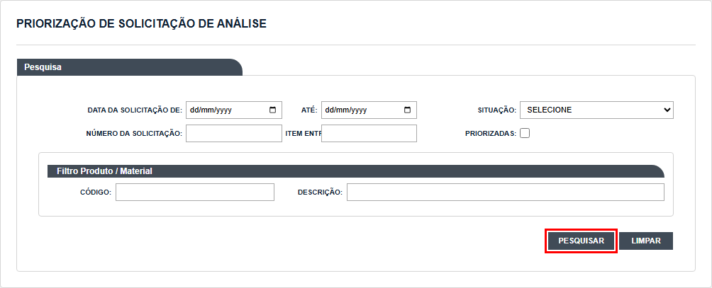
- Pesquisar sem filtro. Clique em PESQUISAR. A lista mostra 10 linhas por página, em 3 páginas na massa de 20/11/2026, com NÚMERO SOLICITAÇÃO, DATA SOLICITAÇÃO, SITUAÇÃO, ITEM ENTRADA, CÓDIGO DO PRODUTO, PRODUTO, a caixa de prioridade (coluna do ícone de alerta) e o ícone de histórico. (Em 11/11/2026 esta pesquisa dizia "Nenhuma solicitação encontrada."; corrigido.)
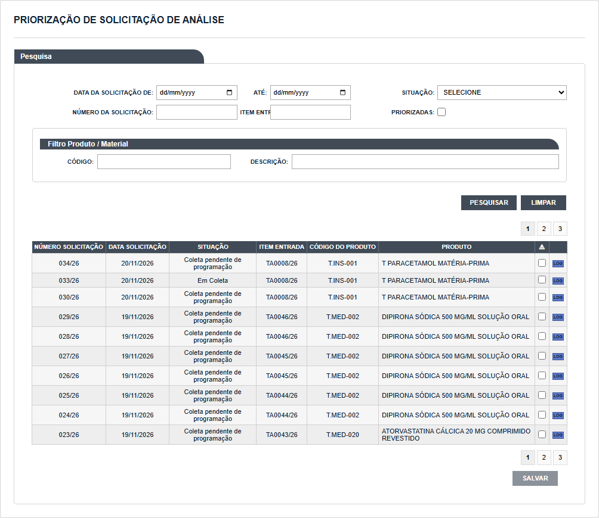
Solicitações canceladas ficam fora da lista, como no legado: a pesquisa pelo número da 032/26 (cancelada na tela Solicitação de Análise) mostra "Nenhuma solicitação encontrada.".
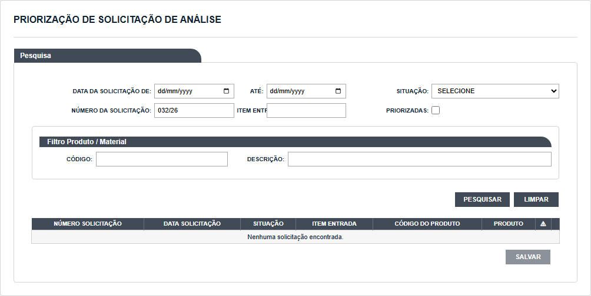
- Filtrar pelo número. Digite 030/26 em NÚMERO DA SOLICITAÇÃO e clique em PESQUISAR. A lista traz só a 030/26, com a caixa de prioridade desmarcada e o botão SALVAR embaixo.
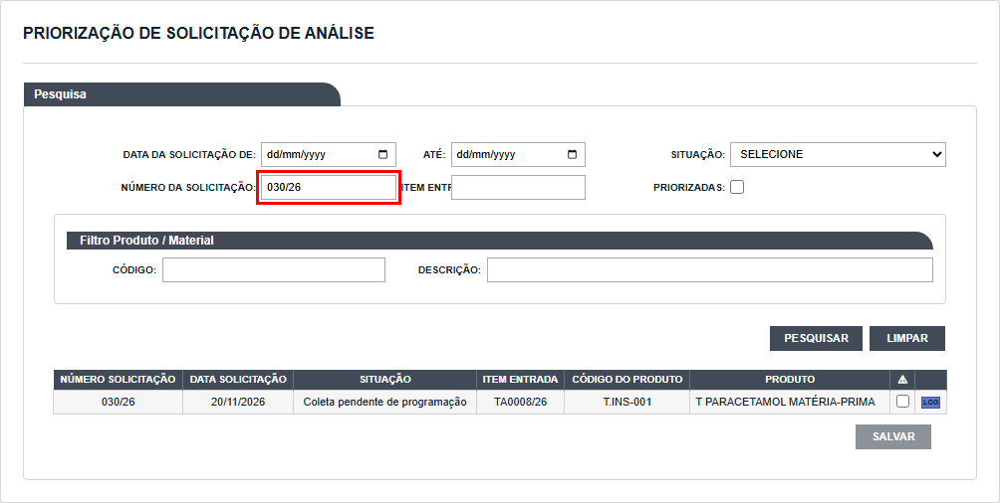
- Marcar a prioridade. Marque a caixa da linha e clique em SALVAR. A tela pergunta "Confirma a priorização do(s) item(s)?", com SIM e NÃO.
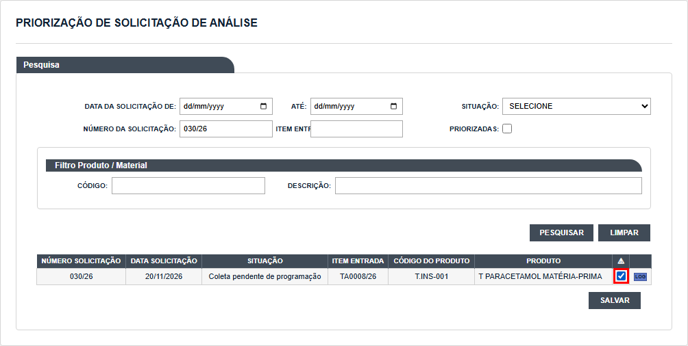
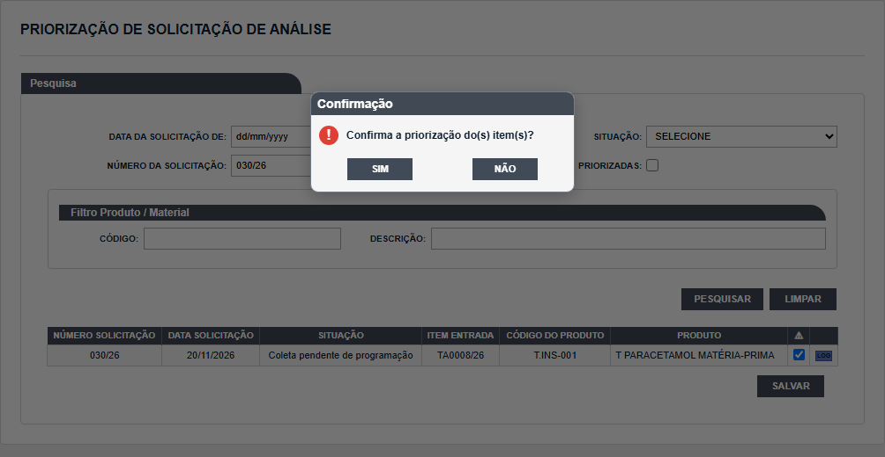
- Clique em SIM. A prioridade é gravada, mas a tela não mostra nenhuma mensagem de sucesso (DV-CQ-N-041): fica no mesmo lugar, com o filtro e a lista mantidos e a caixa marcada (no legado a tela voltava ao início, vazia). Para conferir, marque PRIORIZADAS e pesquise de novo: a 030/26 aparece.
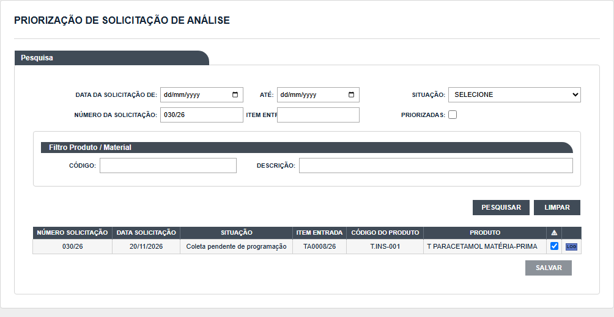
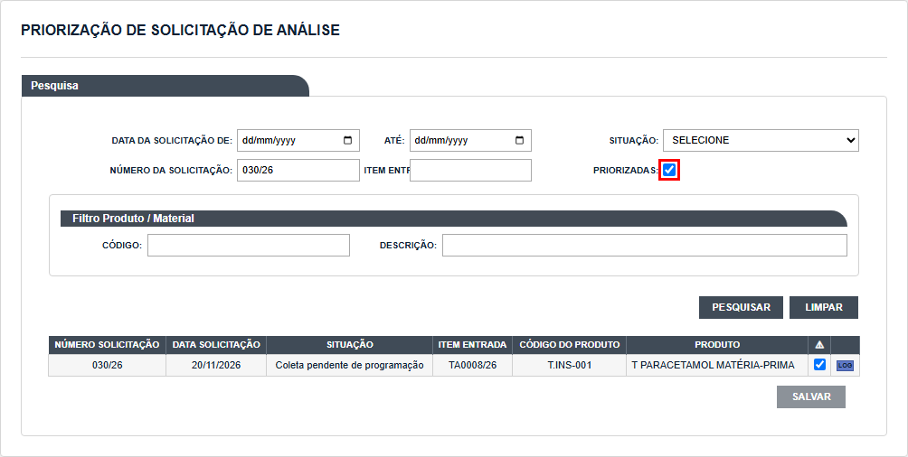
- Ver o histórico. Clique no ícone de histórico da linha. A janela "LOG DE ALTERAÇÕES" mostra uma alteração por vez: campo URGENTE, valor anterior e valor novo (0 para 1 ao priorizar, 1 para 0 ao remover), com a justificativa "ALTERAR PRIORIDADE" e o autor como "Usuário: 1" (o número, não o nome; DV-CQ-N-006), acima da inclusão da solicitação.
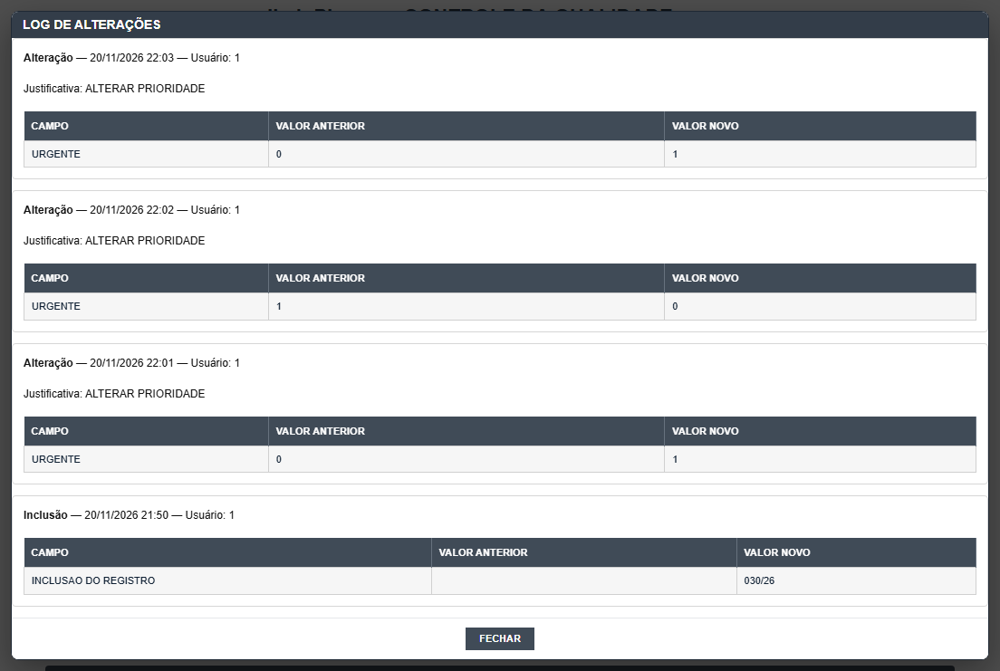
- Remover a prioridade. Pesquise com PRIORIZADAS marcada, desmarque a caixa da linha e clique em SALVAR. A tela pergunta "Confirma a remoção da priorização do(s) item(s)?". Clique em SIM: de novo sem mensagem de sucesso, e a pesquisa com PRIORIZADAS marcada deixa de trazer a 030/26.
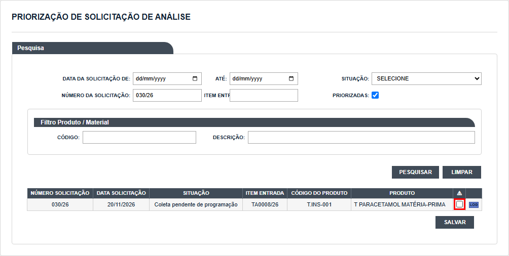
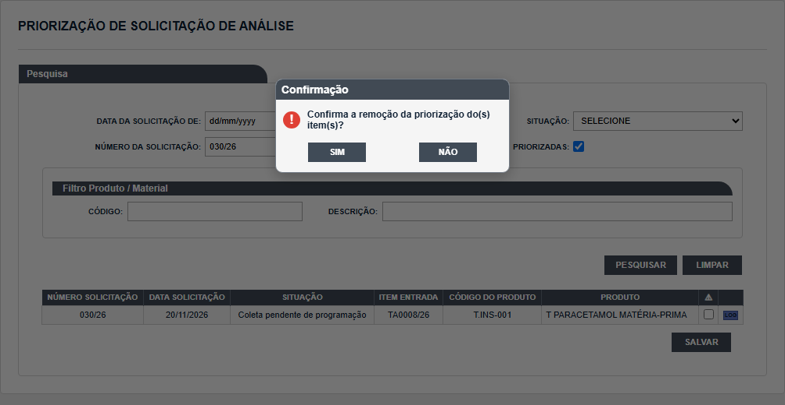
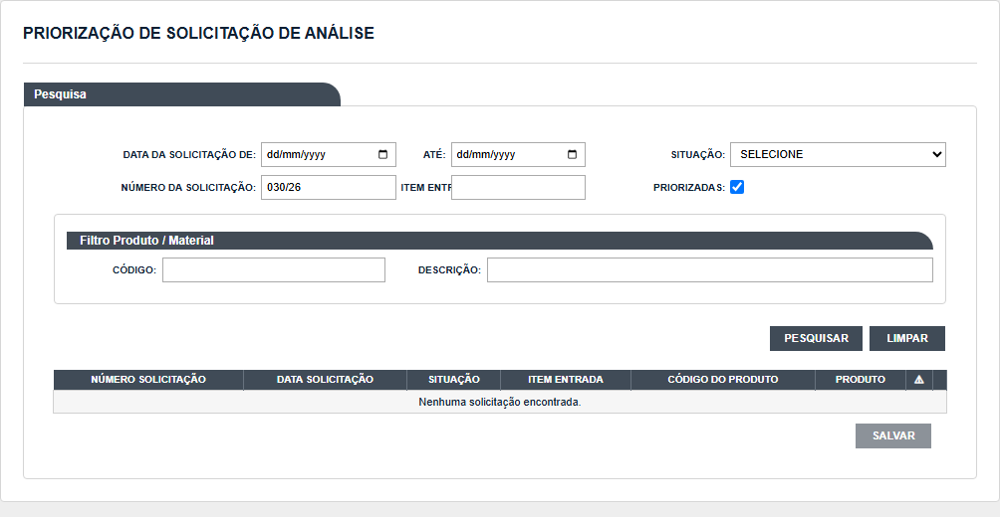
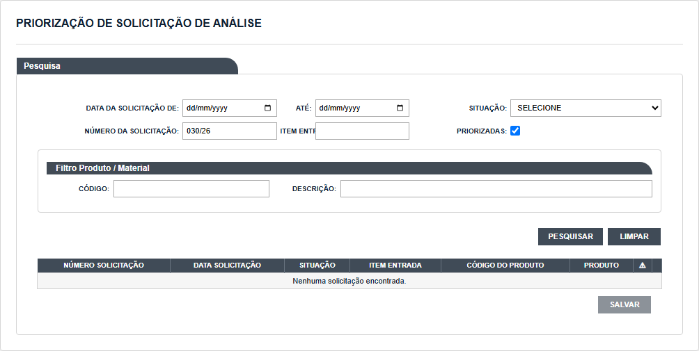
- Para onde a solicitação segue. A solicitação priorizada aparece em "Urgentes!" na tela Programação de Amostragem, com o ícone de alerta (confirmado na tela 23, passo 4). A 030/26 foi deixada priorizada de propósito para essa conferência.
Como era no legado (do legado): a mensagem de sucesso era "Alteração efetuada com sucesso." e, depois de salvar, a tela voltava ao início e vazia; o histórico dizia só "ALTERAR".